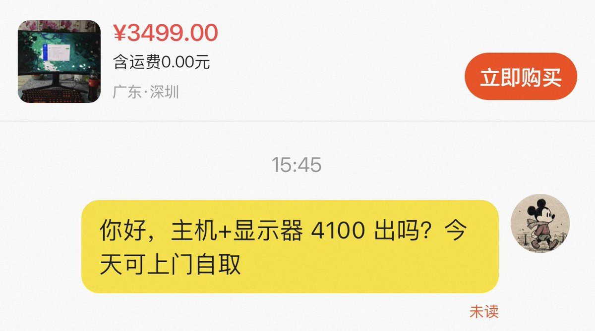

奶昔🥤
@realNyarime
@LeeMmai 怕矿卡过不了3dmark其他都还好

李麦麦
@LeeMmai
看中一套主机配置，先在闲鱼上查好每个二手件的价格，给出我认为公道的价格，然后开始紧张：
＞我真希望对方同意，那我今天就可以买到了
>我真不希望对方同意，这要花很大一笔钱，而且也说明了我给出的报价偏高了
内心戏实在太足了😅
贱狗！掌嘴！ https://t.co/pha0btKiBq